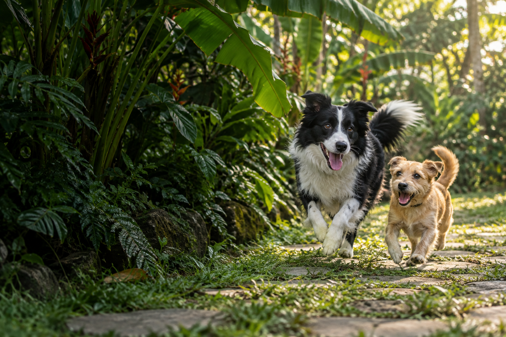

Una casa que
también es suya.
Cómo compartir espacios sin olvidar lo que necesita cada uno: descanso, juego y un rincón propio.
EL ARTE DE CONVIVIR

MENOS PRISA. MÁS VIDA JUNTOS.
Los paseos que se alargan. El rincón que ahora comparten. Esas pequeñas cosas que hacen grande una vida con mascotas.
Abre la revistaVolver a descubrir
lo cotidiano.
NUESTRO PUNTO DE PARTIDA
No hace falta un gran plan.
A veces, basta con estar presentes.
PARA LEER CON CALMA
Cómo compartir espacios sin olvidar lo que necesita cada uno: descanso, juego y un rincón propio.
Escuchar también significa reconocer cuándo tu mascota quiere descansar.
Una llegada tranquila puede empezar con menos visitas y más paciencia.
Pequeñas oportunidades para explorar y jugar en un entorno seguro.
02 / PLANES JUNTOS
Elige una compañía y el tiempo que tienes. Te proponemos una idea sencilla para compartir.
Adapta el plan a su edad, energía y comodidad. Si necesita cuidados específicos, sigue la orientación de su veterinario.
TU PLAN DE HOY
En una ruta habitual, dale tiempo para olfatear y observar. El recorrido importa menos que disfrutarlo juntos.
03 / UN HOGAR COMPARTIDO
La comodidad empieza con pequeños acuerdos y una mirada atenta.
Una cama o un rincón tranquilo, alejado del paso constante. Si se retira a descansar, respeta ese momento.
Juego supervisado, objetos adecuados y espacios seguros. Renueva las actividades según lo que le interese.
Haz sitio a la compañía sin forzar el contacto. Algunas mascotas prefieren estar cerca; otras necesitan más distancia.
LA IDEA QUE NOS ACOMPAÑA
Compartir la vidaHUELLA & HOGAR
es aprender a mirar
con otros ojos.
POR SI TE LO PREGUNTAS
No. Es un espacio editorial con ideas para convivir con mascotas. Para una adopción real, contacta directamente con refugios y fundaciones locales.
Son ideas generales. Adáptalas a tu mascota, su comodidad y sus necesidades. No sustituyen la orientación veterinaria ni la de un profesional del comportamiento.
No. El selector funciona en tu navegador y sus elecciones no se envían ni se guardan. Puedes consultar los detalles en nuestra política de privacidad.
PARA TU PRÓXIMO DÍA JUNTOS
Prueba una pausa, un paseo distinto o un rato de juego.
Lo cotidiano también puede sorprender.